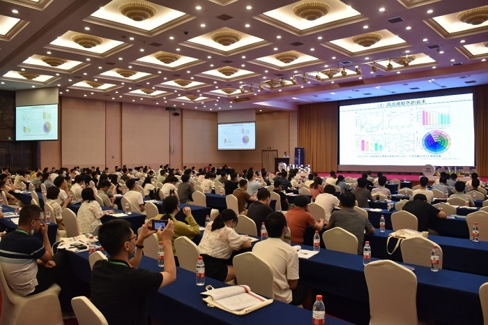

杭电王教授在国际传播学学术会议上发表重要演讲
作者：张晓明
发布时间：2024年6月21日
在2024年6月20日举行的国际传播学学术会议上，杭州电子科技大学的王教授以其在数字媒体传播领域的卓越贡献，受到了国际学术界的广泛关注。本次会议汇聚了来自世界各地的顶尖学者和行业专家，共同探讨了传播学的未来趋势和挑战。 王教授在会议上发表了题为“数字时代的信息传播与社会责任”的演讲。他深入分析了在数字化、网络化的今天，信息传播的速度和广度达到了前所未有的水平，同时也带来了一系列社会问题，如信息过载、假新闻的泛滥等。王教授强调，作为传播学者和从业者，我们有责任引导信息传播的健康发展，促进社会的整体福祉。。
在演讲中，王教授提出了几点建议。首先，他提倡建立更加完善的信息审核机制，以减少不实信息的传播。其次，他强调了媒体素养教育的重要性，认为每个人都应该学会批判性地分析和接收信息。最后，王教授呼吁加强国际合作，共同应对全球性的传播挑战。 王教授的演讲受到了与会者的热烈响应。许多学者表示，王教授的观点深刻，为解决当前的传播问题提供了新的思路和方法。会议结束后，王教授还与多位国际学者进行了深入的交流和讨论，共同探索了未来传播学研究的新方向。 本次会议不仅是王教授个人学术生涯的一个重要里程碑，也是杭州电子科技大学在国际学术舞台上的一次精彩亮相。 
通过这次会议，杭电的学术影响力得到了进一步的提升，为学校的国际化发展奠定了坚实的基础。
王教授的此次出席和演讲，充分展示了杭州电子科技大学在传播学领域的研究实力和国际视野。我们期待王教授和他的团队在未来能够取得更多的研究成果，为推动传播学的发展做出更大的贡献。
随着会议的圆满结束，王教授表示，他将把会议上的交流成果带回杭电，与同事们分享，并将其融入到教学和研究中。我们相信，这些新鲜的思想和观点将为杭电的传播学教育带来新的活力，培养出更多具有国际视野和创新能力的优秀人才。
在数字化浪潮的推动下，传播学正面临着前所未有的机遇和挑战。王教授的出席和演讲，不仅提升了杭州电子科技大学在该领域的知名度，也为全球传播学的发展贡献了中国智慧和中国方案。我们期待着在未来的国际舞台上，看到更多杭电学者的身影，听到更多来自中国的声音